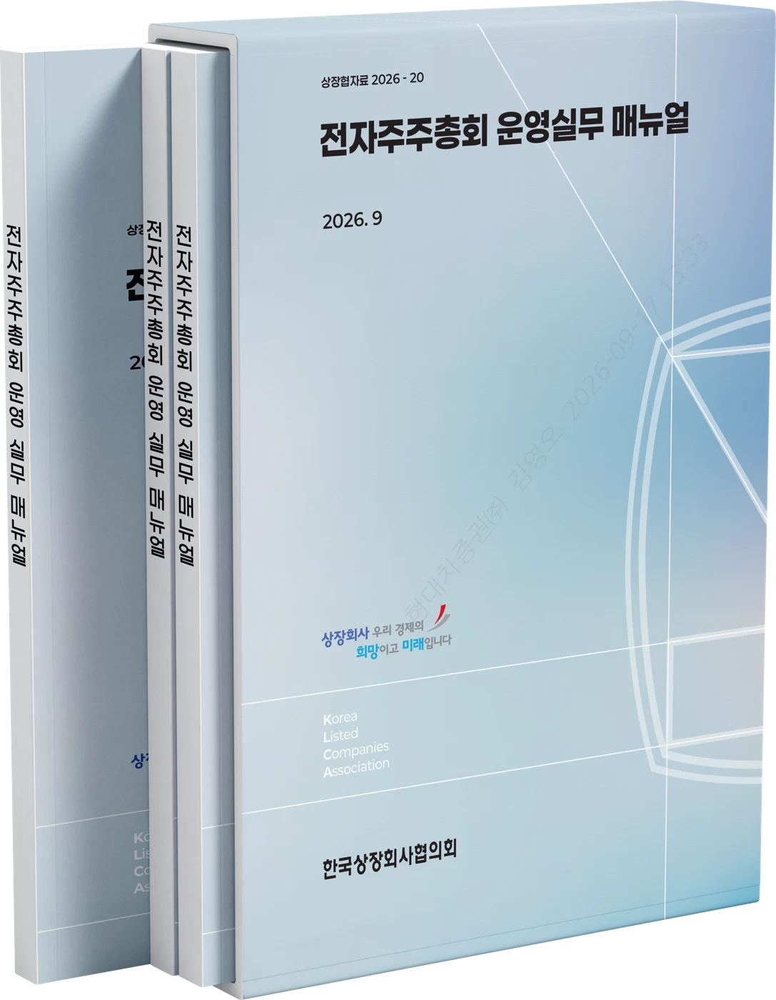

Korea Institute of Shareholders’ Meeting
권재열
한국주주총회연구소장
경희대 법학전문대학원 교수
권재열
한국주주총회연구소장
법제 · 사법
법무부 상법 특별위원회 위원 역임
상법 시행령 제정 TF 위원장 역임
대법원 재판연구관 역임
학계
경희대학교 법학전문대학원 원장 역임
한국상사판례학회 회장 역임
전자주주총회 연구

「전자주주총회
운영실무 매뉴얼」
집필
한국상장회사협의회 · 2026


전자주주총회 연구
「전자주주총회
운영실무 매뉴얼」 집필
한국상장회사협의회 · 2026